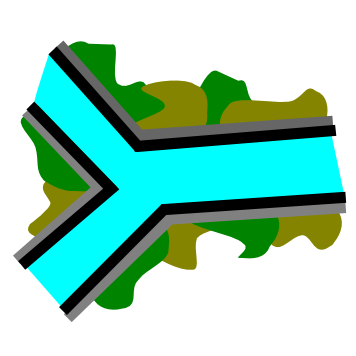
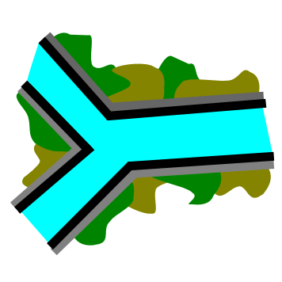

The hydrological system proposed by the Example 2 includes four hydrological models of production, a GSM and three HBV models as well as the rivers of the basin. The discharge production in the sub-basins area is based on given precipitations and temperatures from a database.
This expected model is represented in Figure 17.1.
The parameters of the objects are provided in Figure 17.2 to Figure 17.4 and the precipitation and temperature data are in the database “Database manual”.
17.1 Objective of Example 2
The objective of this example is to determine the hydrograph in the outlet of the system during the period between the 08.05.2013 00:00 and the 15.05.2013 00:00, the peak discharge and the peak time, as well as the discharge created at the outlet of each sub-basin.
The simulation parameters are:
Simulation time step = 600 s
Recording time step = 600 s
A uniform and null ETP is assumed for this example (the user can check the selected ETP method in the RS MINERVE settings).

Besides, two meteorological real stations are included in the data base:
17.2 Resolution of Example 2
First of all, the subcatchment with HBV  and GSM
and GSM  models will be set up. Then, the three rivers
models will be set up. Then, the three rivers  (with Kinematic Wave) and the two junctions  are also added as presented in Figure 17.6 (more details are given in Example 1 for model construction, including the link between each object and their parameterization).
(with Kinematic Wave) and the two junctions  are also added as presented in Figure 17.6 (more details are given in Example 1 for model construction, including the link between each object and their parameterization).

After that, the models are linked from upstream to downstream (Figure 17.7) and the relations created can be visualized by double clicking on each blue arrow (Figure 17.8, Figure 17.9).


The parameters associated to each object are then introduced (values available in previous tables). The result is presented for both HBV 1 and GSM 1 models in Figure 17.10.
Secondly, virtual weather stations are inserted. For its accomplishment, 4 Virtual Weather Stations  are created and connected according to Figure 17.11. The topology of the relations created in this case is detailed in Figure 17.12. Then the parameters are introduced (Figure 17.13) with the available values presented previously.
are created and connected according to Figure 17.11. The topology of the relations created in this case is detailed in Figure 17.12. Then the parameters are introduced (Figure 17.13) with the available values presented previously.


Constructed model can be now saved clicking in the button  and giving a name to the .rsm file (e.g. “Example2.rsm”).
and giving a name to the .rsm file (e.g. “Example2.rsm”).
Next, the meteorological data have to be loaded: the dialog box of the database is opened clicking in  (Figure 17.14) for loading the corresponding database file (“Database manual.dbx”).
(Figure 17.14) for loading the corresponding database file (“Database manual.dbx”).

The user can click on the Database tab to visualize or modify the series of the database (Figure 17.15).
Once the database loaded, the user can connect the database to the hydrological model. For achieving this purpose, the user has to choose the correct data source in the corresponding frame (Figure 17.16): the group “Measure” and the dataset “DataSet Example 2and3” for the current example. Since no source, TurbineDB, reservoir or consumer objects exist in the model, it is not necessary to fill up their data sources.

Finally, and after achieve a simulation, the weight of each meteorological real station can be checked by clicking at one Virtual Weather station of the hydrological model (Figure 17.17).

The pre-simulation validation ( ) allows to valid the model. If the message: “Model ‘Example 2’ is valid” appears, the simulation can be started by clicking in the button Start.
) allows to valid the model. If the message: “Model ‘Example 2’ is valid” appears, the simulation can be started by clicking in the button Start.
17.3 Results of Example 2
Once finished the calculation, the hydrograph in the outlet of the system, among others, can be visualized (Figure 17.18).
If we check the values (Figure 17.19), we can found that the maximal discharge arrives on May the 9th, 2013 at 07:00 and the discharge value is 8.154 m3/s.

All the simulated variables of the model (including the discharge in each sub-basin outlet) can be visualized (Figure 17.20 and Figure 17.21) clicking on the “Selection and plots” frame and in selecting the series to draw as presented in Section 5.2. Finally you can export the selection results in excel format clicking in “Export results to…” in the series frame.